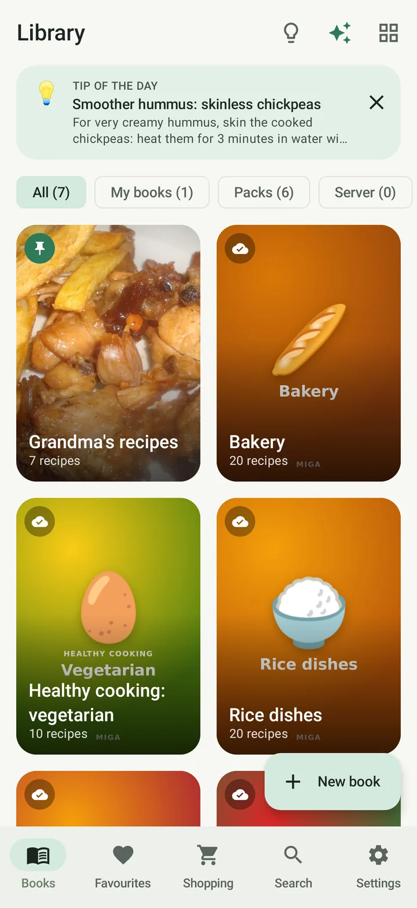
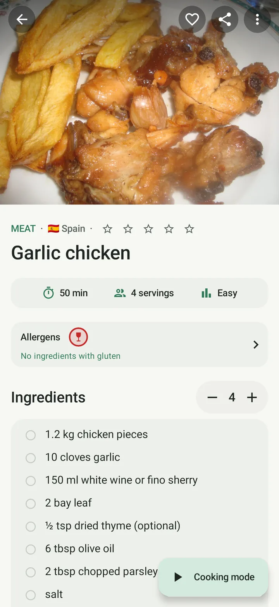
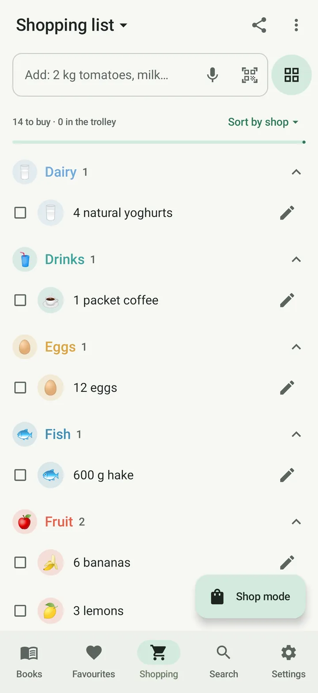
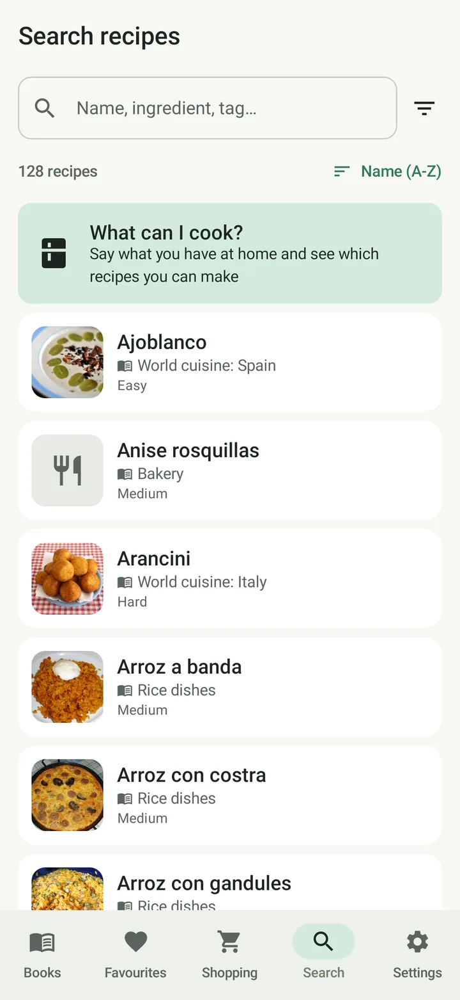
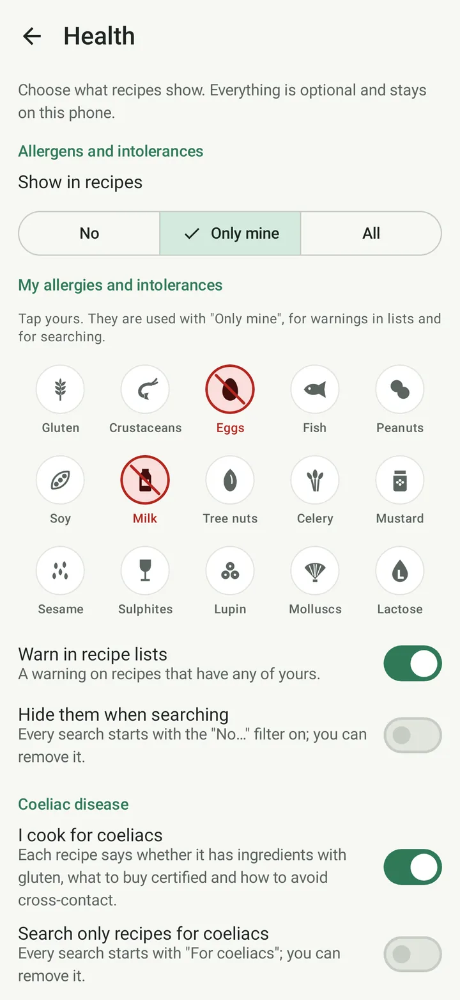
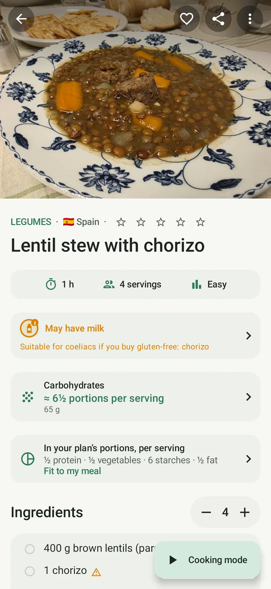
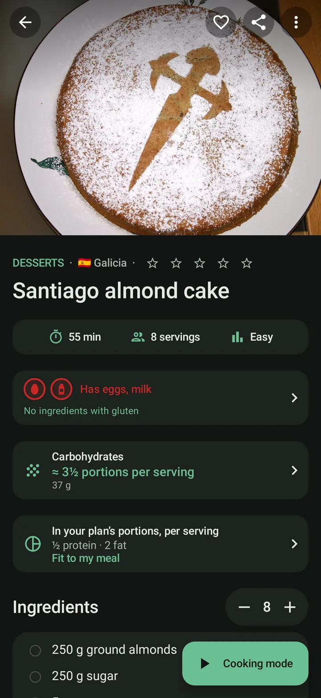

Books with covers
Organise recipes into books: your mum's, a friend's, or one per topic.
- Pin your favourite books on top
- Recipes grouped by category
- Swipe between recipes like the pages of a book
A complete app for home cooking, explained without small print and with screens of the real app.
Screens of the app as they are, with recipes from the packs.










Organise recipes into books: your mum's, a friend's, or one per topic.
Find any recipe across all your books by name or ingredient.
Writing a recipe is quick: tabs for each part and suggestions from what you've used before.
Crop, rotate and improve your photos, saved at just the right size.
Big steps and the screen always on.
Add all the ingredients of a recipe in one go.
Scan barcodes to add products and see their sheet.
Bring recipes from wherever they are.
The 14 allergens of EU law plus lactose, worked out from the ingredients.
For those who count portions (with diabetes, for instance). Optional.
Follow cooking channels on YouTube, profiles on Instagram and recipe websites.
Short tips to cook better, offline.
Share a recipe or a whole book in the format you need.
Save your whole library in one file and restore it whenever you like.
Make Miga look the way you like.
Your recipes, just for you.
Join the beta, create your first book and save that recipe everyone keeps asking for.
Miga is in testing on Google Play. Email us from your Google account's address and we'll send you an invitation.